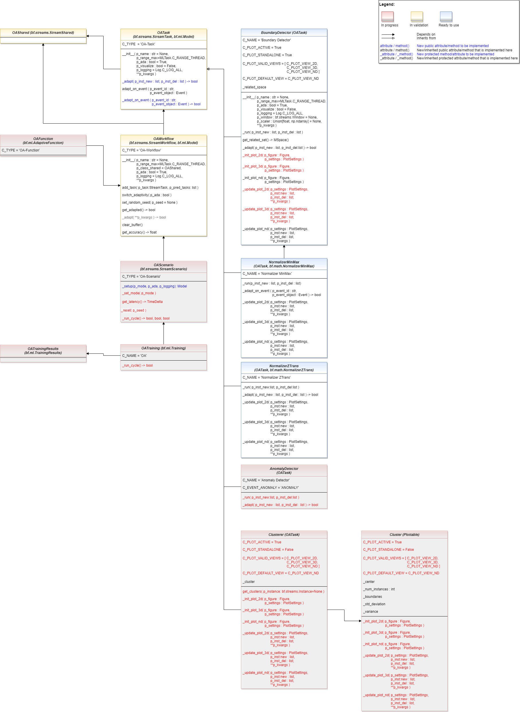

Online Adaptivity¶
Serial Processing¶
Ver. 0.6.0 (2023-01-01)
Core classes for online machine learning.
Bases:
mlpro.bf.streams.models.StreamSharedTemplate class for shared objects in the context of online adaptive stream processing.
-
class
mlpro.oa.models.OATask(p_name: str = None, p_range_max=1, p_ada: bool = True, p_duplicate_data: bool = False, p_visualize: bool = False, p_logging=True, **p_kwargs)¶ Bases:
mlpro.bf.streams.models.StreamTask,mlpro.bf.ml.basics.ModelTemplate class for online adaptive ML tasks.
- Parameters
p_name (str) – Optional name of the task. Default is None.
p_range_max (int) – Maximum range of asynchonicity. See class Range. Default is Range.C_RANGE_PROCESS.
p_ada (bool) – Boolean switch for adaptivitiy. Default = True.
p_duplicate_data (bool) – If True, instances will be duplicated before processing. Default = False.
p_visualize (bool) – Boolean switch for visualisation. Default = False.
p_logging – Log level (see constants of class Log). Default: Log.C_LOG_ALL
p_kwargs (dict) – Further optional named parameters.
-
C_TYPE= 'OA-Task'¶
-
C_PLOT_ACTIVE: bool = True¶
-
C_PLOT_STANDALONE: bool = True¶
-
C_PLOT_VALID_VIEWS: list = ['2D', '3D', 'ND']¶
-
C_PLOT_DEFAULT_VIEW: str = 'ND'¶
-
adapt_on_event(p_event_id: str, p_event_object: mlpro.bf.events.Event)¶ Method to be used as event handler for event-based adaptations. Calls custom method _adapt_on_event() and updates the internal adaptation state.
- Parameters
p_event_id (str) – Event id.
p_event_object (Event) – Object with further context informations about the event.
-
class
mlpro.oa.models.OAWorkflow(p_name: str = None, p_range_max=1, p_class_shared=<class 'mlpro.oa.models.OAShared'>, p_ada: bool = True, p_visualize: bool = False, p_logging=True, **p_kwargs)¶ Bases:
mlpro.bf.streams.models.StreamWorkflow,mlpro.bf.ml.basics.ModelOnline adaptive workflow based on a stream-workflow and an ml model.
- Parameters
p_name (str) – Optional name of the workflow. Default is None.
p_range_max (int) – Maximum range of asynchonicity. See class Range. Default is Range.C_RANGE_PROCESS.
p_class_shared – Optional class for a shared object (class OAShared or a child class of OAShared)
p_ada (bool) – Boolean switch for adaptivitiy. Default = True.
p_visualize (bool) – Boolean switch for visualisation. Default = False.
p_logging – Log level (see constants of class Log). Default: Log.C_LOG_ALL
p_kwargs (dict) – Further optional named parameters.
-
C_TYPE= 'OA-Workflow'¶
-
add_task(p_task: mlpro.bf.streams.models.StreamTask, p_pred_tasks: list = None)¶ Adds a task to the workflow.
- Parameters
p_task (Task) – Task object to be added.
p_pred_tasks (list) – Optional list of predecessor task objects
-
switch_adaptivity(p_ada: bool)¶ Switches adaption functionality on/off.
- Parameters
p_ada (bool) – Boolean switch for adaptivity
-
set_random_seed(p_seed=None)¶ Resets the internal random generator using the given seed.
-
get_adapted() → bool¶ Returns True, if the model was adapted at least once. False otherwise.
-
clear_buffer()¶ Clears internal buffer (if buffering is active).
-
get_accuracy()¶ Computes the accuracy of the model.
- Returns
Accuracy of the model as a scalar value in interval [0,1]
- Return type
float
-
class
mlpro.oa.models.OAFunction(p_input_space: mlpro.bf.math.basics.MSpace, p_output_space: mlpro.bf.math.basics.MSpace, p_output_elem_cls=<class 'mlpro.bf.math.basics.Element'>, p_buffer_size=0, p_ada: bool = True, p_visualize: bool = False, p_logging=True, **p_kwargs)¶ Bases:
mlpro.bf.ml.basics.AdaptiveFunction…
-
C_TYPE= 'OA-Function'¶
-
-
class
mlpro.oa.models.OAScenario(p_mode, p_cycle_limit=0, p_visualize: bool = False, p_logging=True)¶ Bases:
mlpro.bf.streams.models.StreamScenario…
-
C_TYPE= 'OA-Scenario'¶
-
-
class
mlpro.oa.models.OATrainingResults(p_scenario: mlpro.bf.ml.basics.Scenario, p_run, p_cycle_id, p_path=None, p_logging='W')¶ Bases:
mlpro.bf.ml.basics.TrainingResults…